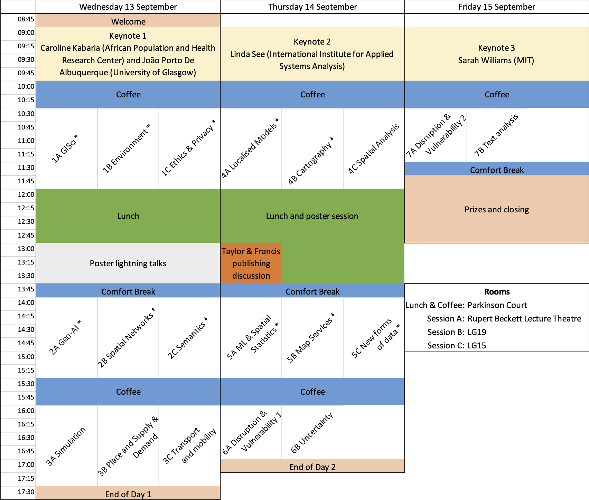

GISscience 2023
Programme
The main conference runs from 13th – 15th September 2023, with workshops and a welcome reception on 12th September.
Handbook and Proceedings
- The handbook is available for download (as a pdf)
- All papers accepted for GIScience have been published in the official proceedings: 12th International Conference on Geographic Information Science (GIScience 2023). Roger Beecham and Jed A. Long and Dianna Smith and Qunshan Zhao and Sarah Wise (Eds.) ISBN 978-3-95977-288-4, LIPICS Vol. 277. https://drops.dagstuhl.de/opus/portals/lipics/index.php?semnr=16299 .
Tuesday 12th September
- 09:00 - 17:00: Workshops (registration from 08:30). Leeds University Business School, Maurice Keyworth building
- 18:00 - 20:30: Welcome reception (with music, buffet and drinks), Great Hall
Wednesday 13th September
- 08:45 - 17:30: Full day conference program, Michael Sadler building. Registration is from 08:00 in the Parkinson Court.
- Evening is free for delegates to explore Leeds.
Thursday 14th September
- 09:00 - 17:00: Full day conference program, Michael Sadler Building. Registration is from 08:30 in the Pakinson Court.
- 19:00 – 22:00: Conference dinner at the Queens Hotel.
Friday 15th September
- 09:00 - 13:00: Half-day conference program. Registration is from 08:30 in the Pakinson Court.
Overview of the Conference Sessions
Sessions marked with * contain a long paper.
Detailed Session Information
Papers marked with * are long papers.
| Session | Paper Title | Authors | |
|---|---|---|---|
| 1A GISci. Chair: Shawn Laffan | |||
| 1A | 10:30 | Map Reproducibility in Geoscientific Publications: An Exploratory Study* |
Eftychia Koukouraki; Christian Kray |
| 1A | 11:00 | Toward Causal Aware GIS - Events as cornerstones |
Nina Polous |
| 1A | 11:15 | Causal effects under spatial confounding and interference |
Jing Zhang |
| 1A | 11:30 | From Reproducible to Explainable GIScience |
Mark Gahegan |
| 1A | 11:45 | Modeling affordances |
Sabine Timpf; Franziska Klügl |
| 1B Environment. Chair: Jed Long | |||
| 1B | 10:30 | Genetic programming for computationally efficient land use allocation optimization* |
Moritz Hildemann; Alan T. Murray; Judith A. Verstegen |
| 1B | 11:00 | How does travel environment affect mood? A study using geographic ecological momentary assessment in the UK |
Milad Malekzadeh; Darja Reuschke; Jed Long |
| 1B | 11:15 | Unlocking the Power of Mobile Phone Application Data to Accelerate Transport Decarbonisation |
Xianghui Zhang; Tao Cheng |
| 1B | 11:30 | How to improve joint suitability mapping for search space reduction? |
Haoyu Wang; Jennifer Miller |
| 1B | 11:45 | Harnessing the sunlight on facades - an approach for determining vertical photovoltaic potential |
Franz Welscher; Ivan Majic; Franziska Hübl; Rizwan Bulbul; Johannes Scholz |
| 1C Ethics and Privacy. Chair: Ana Basiri | |||
| 1C | 10:30 | Platial k-anonymity: Improving location anonymity through temporal popularity signatures* |
Grant McKenzie; Hongyu Zhang |
| 1C | 11:00 | The Ethics of AI-Generated Maps: DALLE·2 and AI’s Implications for Cartography |
Qianheng Zhang; Yuhao Kang; Robert Roth |
| 1C | 11:15 | Towards an inclusive urban environment: A participatory approach for collecting spatial accessibility data in Zurich |
Hoda Allahbakhshi |
| 1C | 11:30 | Confidential, decentralized location-based data services |
Benjamin Adams |
| 1C | 11:45 | How to count travelers without tracking them between locations |
Nadia Shafaeipour; Maarten van Steen; Frank Ostermann |
| 2A Geo-AI. Chair: Rich Harris | |||
| 2A | 14:00 | Transitions in Dynamic Map Labeling* |
Thomas Depian; Guangping Li; Martin Nöllenburg; Jules Wulms |
| 2A | 14:30 | Calculating Shadows with U-Nets for Urban Environments |
Dominik Rothschedl; Franz Welscher; Franziska Hübl; Ivan Majic; Daniele Giannandrea; Johannes Scholz; Matthias Wastian; Niki Popper |
| 2A | 14:45 | Estimating the Impact of a Flood Event on Property Value and its Diminished Effect Over Time |
Nazia Sodial; Oleksandr Galkin; Aidan Slingsby |
| 2A | 15:00 | Framework for motorcycle real-time risk assessment using onboard panoramic camera |
Natchapon Jongwiriyanurak; Zichao Zeng; Meihui Wang; James Haworth; Garavig Tanaksaranond; Jan Boehm |
| 2A | 15:15 | Evaluating the Effectiveness of Large Language Models in Representing Textual Descriptions of Geometry and Spatial Relations |
Yuhan Ji; Song Gao |
| 2B Spatial Networks. Chair: Sabine Timpf | |||
| 2B | 14:00 | Visualizing Geophylogenies - Internal and External Labeling with Phylogenetic Tree Constraints* |
Jonathan Klawitter; Felix Klesen; Joris Y. Scholl; Thomas C. van Dijk; Alexander Zaft |
| 2B | 14:30 | Urmi Shah; Jia Wang | |
| 2B | 14:45 | Anonymous routing using minimum capacity clustering |
Maike Buchin and Lukas Plätz |
| 2B | 15:00 | Assessing epidemic spreading potential with Encounter Netwrk |
Behnam Tahmasbi; Farnoosh Roozkhosh; X. Angela Yao |
| 2B | 15:15 | Betweenness Centrality in Spatial Networks: A Spatially Normalised Approach |
Christian Werner; Martin Loidl |
| 2C Semantics. Chair: Henrikki Tenkanen | |||
| 2C | 14:00 | Do You Need Instructions Again? Predicting Wayfinding Instruction Demand* |
Negar Alinaghi; Tiffany C.K. Kwok; Peter Kiefer; Ioannis Giannopoulos |
| 2C | 14:30 | Does generalisation matters in pan-scalar maps? |
Azelle Courtial; Guillaume Touya |
| 2C | 14:45 | Exploring Map App Usage Behaviour Through Touchscreen Interactions |
Donatella Zingaro; Mona Bartling; Tumasch Reichenbacher |
| 2C | 15:00 | Why is Greenwich so common? Quantifying the uniqueness of multivariate observations |
Andrea Ballatore; Stefano Cavazzi |
| 2C | 15:15 | Geography and the Brain’s Spatial System |
May Yuan; Kristen Kennedy |
| 3A Simulation. Chair: Andrew Crooks | |||
| 3A | 16:00 | Agent-Based Modelling and Disease: Demonstrating the Role of Human Remains in Epidemic Outbreaks |
Huixin Liu; Sarah Wise |
| 3A | 16:15 | Yiyu Wang; Jiaqi Ge; Alexis Comber | |
| 3A | 16:30 | Using the Dynamic Microsimulation MINOS to Evidence the Effect of Energy Crisis Income Support Policy |
Robert Clay; Luke Archer; Alison Heppenstall; Nik Lomax |
| 3A | 16:45 | Calibration in a Data Sparse Environment: How Many Cases Did We Miss? |
Robert Manning Smith; Sarah Wise; Sophie Ayling |
| 3A | 17:00 | A Data-Driven Decision-Making Framework for Spatial Agent-Based Models of Infectious Disease Spread |
Emma Von Hoene; Amira Roess; Taylor Anderson |
| 3A | 17:15 | Exascale agent-based modelling for policy evaluation in real-time (ExAMPLER) |
Alison Heppenstall; Gary Polhill; Mike Batty |
| 3B Place and Supply and Demand. Chair: Dianna Smith | |||
| 3B | 16:00 | Understanding People’s Perceptions of Their Liveable Neighbourhoods: A Case Study of East Bristol |
Elisa Covato; Shelan Jeawak |
| 3B | 16:15 | Place Identity: A Generative AI’s Perspective |
Kee Moon Jang; Junda Chen; Yuhao Kang; Junghwan Kim; Jinhyung Lee; Fábio Duarte |
| 3B | 16:30 | Predicting visit frequencies to new places |
Nina Wiedemann; Ye Hong; Martin Raubal |
| 3B | 16:45 | Impacts of Catchments Derived from Fine-Grained Mobility Data on Spatial Accessibility |
Alexander Michels; Jinwoo Park; Bo Li; Jeon-Young Kang; Shaowen Wang |
| 3B | 17:00 | Geographic analysis of trade-offs between amenity and supply effects in new office buildings |
Kazushi Matsuo; Morito Tsutsumi; Toyokazus Imazeki |
| 3B | 17:15 | Achieving least relocation of existing facilities in spatial optimisation: a bi-objective model and solution approaches |
Huanfa Chen; Rongbo Xu |
| 3C Transport and mobility. Chair: Urska Demsar | |||
| 3C | 16:00 | Visual Methods for Representing Flow Space with Vector Fields |
Gong Zhaoya; Zhang Han; Thill Jean-Claude |
| 3C | 16:15 | Understanding the complex behaviours of electric vehicle drivers with agent-based models in Glasgow |
Zixin Feng; Qunshan Zhao; Alison Heppenstall |
| 3C | 16:30 | Uncovering Spatiotemporal Patterns of Travel Flows under Extreme Weather Events by Tensor Decomposition |
Zhicheng Deng; Zhaoya Gong; Pengjun Zhao |
| 3C | 16:45 | Finding feasible routes with reinforcement learning using macro-level traffic measurements |
Mustafa Can Ozkan; Tao Cheng |
| 3C | 17:00 | Mobility Vitality: Assessing Neighborhood Similarity through Transportation Patterns in New York City |
Dan Qiang; Grant McKenzie |
| 3C | 17:15 | Simulating and Validating the Traffic of Blackwall Tunnel Using TfL Jam Cam Data and Simulation of Urban Mobility (SUMO) |
Chukun Gao |
| 4A Localised models. Chair: Steve Manson | |||
| 4A | 10:30 | Benchmarking regression models under spatial heterogeneity* |
Nina Wiedemann; Henry Martin; René Westerholt |
| 4A | 11:00 | Counter-Intuitive Effect of Null Hypothesis on Moran’s I tests under Heterogenous Populations |
Nishi Hayato; Ikuho Yamada |
| 4A | 11:15 | A Hierarchical and Geographically Weighted Regression Model and Its Backfitting Maximum Likelihood Estimator |
Yigong Hu; Richard Harris; Richard Timmerman; Binbin Lu |
| 4A | 11:30 | Multiscale spatially and temporally varying coefficient modelling using a Geographic and Temporal Gaussian Process GAM (GTGP-GAM) |
Alexis Comber; Paul Harris; Chris Brunsdon |
| 4A | 11:45 | Introducing a General Framework for Locally Weighted Spatial Modelling Based on Density Regression |
Yigong Hu; Binbin Lu; Richard Harris; Richard Timmerman |
| 4B Cartography. Chair: Roger Beecham | |||
| 4B | 10:30 | Data-spatial layouts for grid maps* |
Nathan van Beusekom; Wouter Meulemans; Bettina Speckmann; Jo Wood |
| 4B | 11:00 | Development of a semantic segmentation approach to old-map comparison |
Yves Annanias; Daniel Wiegreffe; Anreas Niekler; Marta Kuźma; Francis Harvey |
| 4B | 11:15 | The FogDetector: A User Survey to Measure Disorientation in Pan-Scalar Maps |
Guillaume Touya; Justin Berli |
| 4B | 11:30 | Resiliency: A Consensus Data Binning Method |
Arpit Narechania; Alex Endert; Clio Andris |
| 4B | 11:45 | On the Cartographic Communication of Places |
Franz-Benjamin Mocnik |
| 4C Spatial Analysis. Chair: Adam Dennett | |||
| 4C | 10:30 | Building alternative indices of socioeconomic status for population modeling in data-sparse contexts |
Angela Cunningham; Joseph Tuccillo; Tyler Frazier |
| 4C | 10:45 | Investigating MAUP Effects on Census Data Using Approximately Equal-Population Aggregations |
Yue Lin; Ningchuan Xiao |
| 4C | 11:00 | Status poles and status zoning to model urban residential land prices: Status-Quality Trade Off theory |
Thuy Phuong Le; Alexis Comber; Binh Quoc Tran; Phe Huu Hoang; Huy Quang Man; Linh Xuan Nguyen; Tuan Le Pham; Tu Ngoc Bui |
| 4C | 11:15 | Inferring the history of spatial diffusion processes |
Takuya Takahashi; Geneviève Hannes; Nico Neureiter; Peter Ranacher |
| 4C | 11:30 | Characterizing Urban Expansion Processes Using Dynamic Spatial Models – a European Application |
Alex Hagen-Zanker; Jingyan Yu; Susan Hughes; Naratip Santitissadeekorn |
| 4C | 11:45 | Project-Based Urban Dynamics: A Novel Method for Assessing Urban Sprawl |
Nir Fulman; Yulia Grinblat; Itzhak Benenson |
| 5A ML and Spatial Statistics. Chair: Sarah Wise | |||
| 5A | 14:00 | A Comparison of Global and Local Statistical and Machine Learning Techniques in Estimating Flash Flood Susceptibility |
Jing Yao; Ziqi Li; Xiaoxiang Zhang; Changjun Liu; Liliang Ren |
| 5A | 14:15 | Reducing False Discoveries in Statistically-Significant Regional-Colocation Mining: A Summary of Results* |
Subhankar Ghosh; Jayant Gupta; Arun Sharma; Shuai An; Shashi Shekhar |
| 5A | 14:45 | Exploring the Use of Machine and Deep Learning Models for OpenStreetMap Data Quality Assessment and Improvement |
Salim Miloudi; Bouhadjar Meguenni |
| 5A | 15:00 | Moran eigenvectors-based spatial heterogeneity analysis for compositional data |
Zhan Peng; Ryo Inoue |
| 5A | 15:15 | Smarter Than Your Average Model - Bayesian Model Averaging as a Spatial Analysis Tool |
Christopher Brunsdon; Paul Harris; Alexis Comber |
| 5B Map Services. Chair: Levi Wolf | |||
| 5B | 14:00 | Semi-supervised Learning from Street-View Images and OpenStreetMap for Automatic Building Height Estimation* |
Hao Li; Zhendong Yuan; Gabriel Dax; Gefei Kong; Hongchao Fan; Alexander Zipf; Martin Werner |
| 5B | 14:30 | Power of GIS Mapping: ATLAS Flood Maps 2022 |
Munazza Usmani; Hafiz Muhammad Tayyab Bhatti; Francesca Bovolo; Maurizio Napolitano |
| 5B | 14:45 | Application of GIS in Public Health Practice: a Consortium’s Approach to Tackling Travel Delays in Obstetric Emergencies in Urban Areas |
Jia Wang; Itohan Osayande; Peter Macharial; Prestige Tatenda Makanga; Kerry Wong; Tope Olubodun; Uchenna Gwacham-Anisiobi; Olakunmi Ogunyemi; Abimbola Olaniran; Ibukun-Oluwa Abejirinde; Lenka Beňová; Bosede Afolabi; Aduragbemi Banke-Thomas |
| 5B | 15:00 | Progress in Constructing an Open Map Generalization Data Set for Deep Learning |
Cheng Fu; Zhiyong Zhou; Jan Winkler; Nicolas Beglinger; Robert Weibel |
| 5B | 15:15 | Building-level comparison of Microsoft and Google open building footprints datasets |
Jack Gonzales |
| 5C New forms of data. Chair: Qunshan Zhao | |||
| 5C | 14:00 | Towards a multidimensional interaction framework for promoting public engagement in citizen science projects* |
Maryam Lotfian; Jens Ingensand; Christophe Claramunt |
| 5C | 14:30 | Digital Injustice: A Case Study of Land Use Classification using Multisource Data in Nairobi, Kenya |
Wenlan Zhang; Chen Zhong; Faith Taylor |
| 5C | 14:45 | The Ups and Downs of London High Streets Throughout COVID-19 Pandemic: Insights from Footfall-Based Clustering Analysis |
Xinglei Wang; Xianghui Zhang; Tao Cheng |
| 5C | 15:00 | Understanding active travel networks using GPS data from an outdoor mapping app |
Marcus Young |
| 5C | 15:15 | National-scale spatiotemporal variation in driver behaviour |
Elliot Karikari; Manon Prédhumeau; Peter Baudain; Ed Manley |
| 6A Disruption and Vulnerability 1. Chair: Mark Gahegan | |||
| 6A | 16:00 | An Interpretable Index of Social Vulnerability to Environmental Hazards |
Joseph Tuccillo |
| 6A | 16:15 | Beware the rise of models when they are wrong : Looking at Heat Vulnerability with a Spyglass |
Seda Salap-Ayca; Erica Akemi Goto |
| 6A | 16:30 | Exploring Energy Deprivation across Small Areas in England and Wales |
Meixu Chen; Alex Singleton; Caitlin Robinson |
| 6A | 16:45 | Development and Operationalisation of Local Sustainability Indicators - A Gobal South Perspective on Data Challenges and Opportunities for GIScience |
Stefan Steiniger; Carolina Rojas; Ricardo Truffello; Jonathan Barton |
| 6B Uncertainty. Chair: Jiaqi Ge | |||
| 6B | 16:00 | Uncertainty in causal neighborhood effects: a multi-agent simulation approach |
Cecile de Bezenac |
| 6B | 16:15 | An Evaluation of the Impact of Ignition Location Uncertainty on Forest Fire Ignition Prediction using Bayesian Logistic Regression |
David Röbl; Rizwan Bulbul; Johannes Scholz; Mortimer Müller; Harald Vacik |
| 6B | 16:30 | An Integrated Uncertainty and Sensitivity Analysis for Spatial Multicriteria Models |
Piotr Jankowski; Arika Ligmann-Zielinska; Zbigniew Zwolinski; Alicja Najwer |
| 6B | 16:45 | Uncertainty Quantification in the Road-level Traffic Risk Prediction by Spatial-Temporal Zero-Inflated Negative Binomial Graph Neural Network(STZINB-GNN) |
Xiaowei Gao; James Haworth; Dingyi Zhuang; Huanfa Chen; Xinke Jiang |
| 7A Disruption and Vulnerability 2. Chair: Rachel Franklin | |||
| 7A | 10:30 | Waffle Homes: Utilizing Aerial Imagery of Unfinished Buildings to Determine Average Room Size |
Carson Woody; Ty Frazier |
| 7A | 10:45 | A Data Fusion Framework for Exploring Mobility around Disruptive Events |
Evgeny Noi; Somayeh Dodge |
| 7A | 11:00 | Understand the Geography of Financial Precarity in England and Wales |
Zi Ye; Alex Singleton |
| 7A | 11:15 | From change detection to change analytics: Decomposing multi-temporal pixel evolution vectors |
Victoria Scherelis; Patrick Laube; Michael Doering |
| 7B Text analysis. Chair: Yahya Gamal | |||
| 7B | 10:30 | GeoQAMap - Geographic Question Answering with Maps leveraging LLM and open knowledge base |
Yu Feng; Linfang Ding; Guohui Xiao |
| 7B | 10:45 | When Everything is ‘Nearby’: How Airbnb Listings in New York City Exaggerate Proximity |
Mikael Brunila; Priyanka Verma; Grant McKenzie |
| 7B | 11:00 | Agent-based modeling of consumer choice by utilizing crowdsourced data and deep learning |
Boyu Wang; Andrew Crooks |
| 7B | 11:15 | Understanding the spatial complexity in landscape narratives through qualitative representation of space |
Erum Haris; Anthony Cohn; John Stell |